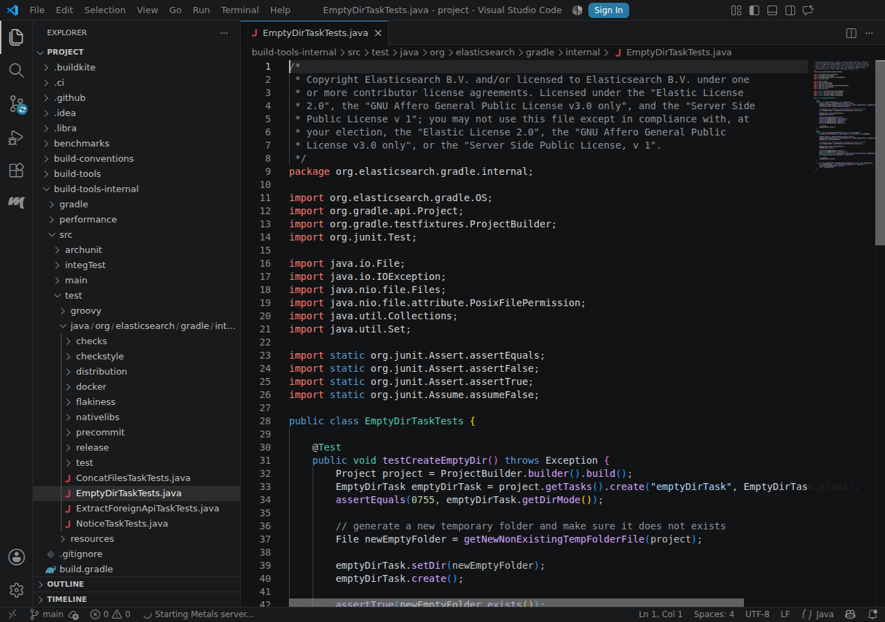
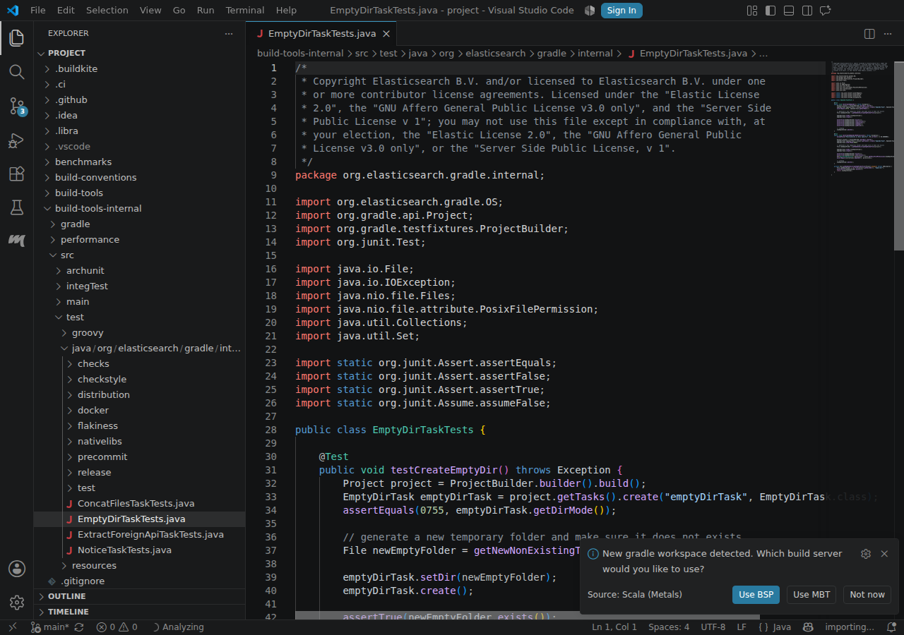
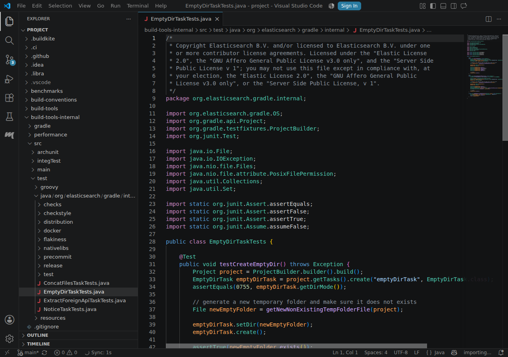
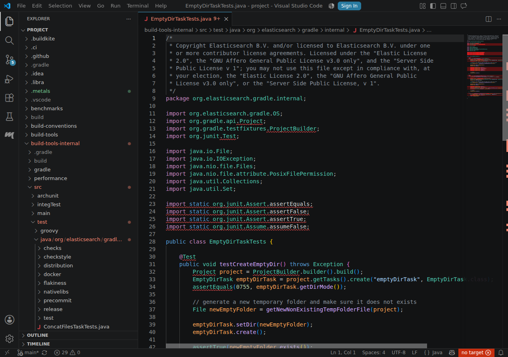

Gradle
Elasticsearch
failedScenarios
-
failed import-included-builds mbt-import · 195.2 s
MBT import did not create valid JSON at /home/runner/work/metals-community-build/metals-community-build/workspaces/project/.metals/mbt.json. Last JSON error: undefined Metals log tail: at org.gradle.internal.operations.DefaultBuildOperationRunner$CallableBuildOperationWorker.execute(DefaultBuildOperationRunner.java:210) at org.gradle.internal.operations.DefaultBuildOperationRunner$CallableBuildOperationWorker.execute(DefaultBuildOperationRunner.java:205) at org.gradle.internal.operations.DefaultBuildOperationRunner$2.execute(DefaultBuildOperationRunner.java:67) at org.gradle.internal.operations.DefaultBuildOperationRunner$2.execute(DefaultBuildOperationRunner.java:60) at org.gradle.internal.operations.DefaultBuildOperationRunner.execute(DefaultBuildOperationRunner.java:167) at org.gradle.internal.operations.DefaultBuildOperationRunner.execute(DefaultBuildOperationRunner.java:60) at org.gradle.internal.operations.DefaultBuildOperationRunner.call(DefaultBuildOperationRunner.java:54) at org.gradle.internal.buildtree.DefaultBuildTreeModelCreator$DefaultBuildTreeModelController.getModel(DefaultBuildTreeModelCreator.java:91) at org.gradle.tooling.internal.provider.runner.BuildModelActionRunner$ModelCreateAction.fromBuildModel(BuildModelActionRunner.java:86) at org.gradle.tooling.internal.provider.runner.BuildModelActionRunner$ModelCreateAction.fromBuildModel(BuildModelActionRunner.java:68) at org.gradle.internal.buildtree.DefaultBuildTreeModelCreator.fromBuildModel(DefaultBuildTreeModelCreator.java:71) at org.gradle.internal.cc.impl.barrier.BarrierAwareBuildTreeModelCreator.fromBuildModel$lambda$0(BarrierAwareBuildTreeModelCreator.kt:37) at org.gradle.internal.cc.impl.barrier.VintageConfigurationTimeActionRunner.runConfigurationTimeAction(VintageConfigurationTimeActionRunner.kt:48) at org.gradle.internal.cc.impl.barrier.BarrierAwareBuildTreeModelCreator.fromBuildModel(BarrierAwareBuildTreeModelCreator.kt:36) at org.gradle.internal.buildtree.DefaultBuildTreeLifecycleController.lambda$fromBuildModel$2(DefaultBuildTreeLifecycleController.java:97) at org.gradle.internal.Try.ofFailable(Try.java:46) at org.gradle.internal.buildtree.DefaultBuildTreeLifecycleController.runModelAction(DefaultBuildTreeLifecycleController.java:140) at org.gradle.internal.buildtree.DefaultBuildTreeLifecycleController.lambda$fromBuildModel$0(DefaultBuildTreeLifecycleController.java:97) at org.gradle.internal.buildtree.DefaultBuildTreeLifecycleController.lambda$runBuild$0(DefaultBuildTreeLifecycleController.java:166) at org.gradle.internal.model.StateTransitionController.lambda$transition$2(StateTransitionController.java:227) at org.gradle.internal.model.StateTransitionController.doTransition(StateTransitionController.java:324) at org.gradle.internal.model.StateTransitionController.lambda$transition$1(StateTransitionController.java:227) at org.gradle.internal.work.DefaultSynchronizer.withLock(DefaultSynchronizer.java:45) at org.gradle.internal.model.StateTransitionController.transition(StateTransitionController.java:227) at org.gradle.internal.buildtree.DefaultBuildTreeLifecycleController.runBuild(DefaultBuildTreeLifecycleController.java:163) at org.gradle.internal.buildtree.DefaultBuildTreeLifecycleController.fromBuildModel(DefaultBuildTreeLifecycleController.java:85) at org.gradle.tooling.internal.provider.runner.BuildModelActionRunner.run(BuildModelActionRunner.java:52) at org.gradle.launcher.exec.ChainingBuildActionRunner.run(ChainingBuildActionRunner.java:35) at org.gradle.internal.buildtree.ProblemReportingBuildActionRunner.run(ProblemReportingBuildActionRunner.java:55) at org.gradle.launcher.exec.BuildOutcomeReportingBuildActionRunner.run(BuildOutcomeReportingBuildActionRunner.java:83) at org.gradle.tooling.internal.provider.FileSystemWatchingBuildActionRunner.run(FileSystemWatchingBuildActionRunner.java:118) at org.gradle.launcher.exec.BuildCompletionNotifyingBuildActionRunner.run(BuildCompletionNotifyingBuildActionRunner.java:64) at org.gradle.launcher.exec.RootBuildLifecycleBuildActionExecutor.lambda$execute$0(RootBuildLifecycleBuildActionExecutor.java:97) at org.gradle.composite.internal.DefaultRootBuildState.run(DefaultRootBuildState.java:119) at org.gradle.launcher.exec.RootBuildLifecycleBuildActionExecutor.execute(RootBuildLifecycleBuildActionExecutor.java:97) at org.gradle.launcher.exec.DefaultBuildTreeActionExecutor.runBuildTreeLifecycle(DefaultBuildTreeActionExecutor.java:126) at org.gradle.launcher.exec.DefaultBuildTreeActionExecutor.access$100(DefaultBuildTreeActionExecutor.java:52) at org.gradle.launcher.exec.DefaultBuildTreeActionExecutor$2.call(DefaultBuildTreeActionExecutor.java:98) at org.gradle.launcher.exec.DefaultBuildTreeActionExecutor$2.call(DefaultBuildTreeActionExecutor.java:94) at org.gradle.internal.operations.DefaultBuildOperationRunner$CallableBuildOperationWorker.execute(DefaultBuildOperationRunner.java:210) at org.gradle.internal.operations.DefaultBuildOperationRunner$CallableBuildOperationWorker.execute(DefaultBuildOperationRunner.java:205) at org.gradle.internal.operations.DefaultBuildOperationRunner$2.execute(DefaultBuildOperationRunner.java:67) at org.gradle.internal.operations.DefaultBuildOperationRunner$2.execute(DefaultBuildOperationRunner.java:60) at org.gradle.internal.operations.DefaultBuildOperationRunner.execute(DefaultBuildOperationRunner.java:167) at org.gradle.internal.operations.DefaultBuildOperationRunner.execute(DefaultBuildOperationRunner.java:60) at org.gradle.internal.operations.DefaultBuildOperationRunner.call(DefaultBuildOperationRunner.java:54) at org.gradle.launcher.exec.DefaultBuildTreeActionExecutor.runAsBuildOperation(DefaultBuildTreeActionExecutor.java:94) at org.gradle.launcher.exec.DefaultBuildTreeActionExecutor.lambda$runBuildTreeAction$0(DefaultBuildTreeActionExecutor.java:88) at org.gradle.internal.work.DefaultWorkerLeaseService.lambda$runAndReleaseLocks$0(DefaultWorkerLeaseService.java:302) at org.gradle.internal.work.ResourceLockStatistics$1.measure(ResourceLockStatistics.java:43) at org.gradle.internal.work.DefaultWorkerLeaseService.runAndReleaseLocks(DefaultWorkerLeaseService.java:300) at org.gradle.internal.work.DefaultWorkerLeaseService.withLocksAcquired(DefaultWorkerLeaseService.java:296) at org.gradle.internal.work.DefaultWorkerLeaseService.withLocks(DefaultWorkerLeaseService.java:288) at org.gradle.internal.work.DefaultWorkerLeaseService.runAsWorkerThread(DefaultWorkerLeaseService.java:131) at org.gradle.launcher.exec.DefaultBuildTreeActionExecutor.runBuildTreeAction(DefaultBuildTreeActionExecutor.java:88) at org.gradle.tooling.internal.provider.continuous.ContinuousBuildActionExecutor.execute(ContinuousBuildActionExecutor.java:111) at org.gradle.tooling.internal.provider.SubscribableBuildActionExecutor.execute(SubscribableBuildActionExecutor.java:64) at org.gradle.internal.session.DefaultBuildSessionContext.execute(DefaultBuildSessionContext.java:46) at org.gradle.internal.buildprocess.execution.BuildSessionLifecycleBuildActionExecutor$ActionImpl.apply(BuildSessionLifecycleBuildActionExecutor.java:106) at org.gradle.internal.buildprocess.execution.BuildSessionLifecycleBuildActionExecutor$ActionImpl.apply(BuildSessionLifecycleBuildActionExecutor.java:94) at org.gradle.internal.session.BuildSessionState.run(BuildSessionState.java:73) at org.gradle.internal.buildprocess.execution.BuildSessionLifecycleBuildActionExecutor.execute(BuildSessionLifecycleBuildActionExecutor.java:67) at org.gradle.internal.buildprocess.execution.BuildSessionLifecycleBuildActionExecutor.execute(BuildSessionLifecycleBuildActionExecutor.java:45) at org.gradle.internal.buildprocess.execution.StartParamsValidatingActionExecutor.execute(StartParamsValidatingActionExecutor.java:57) at org.gradle.internal.buildprocess.execution.StartParamsValidatingActionExecutor.execute(StartParamsValidatingActionExecutor.java:32) at org.gradle.internal.buildprocess.execution.SessionFailureReportingActionExecutor.execute(SessionFailureReportingActionExecutor.java:51) at org.gradle.internal.buildprocess.execution.SessionFailureReportingActionExecutor.execute(SessionFailureReportingActionExecutor.java:39) at org.gradle.internal.buildprocess.execution.SetupLoggingActionExecutor.execute(SetupLoggingActionExecutor.java:47) at org.gradle.internal.buildprocess.execution.SetupLoggingActionExecutor.execute(SetupLoggingActionExecutor.java:31) at org.gradle.launcher.daemon.server.exec.ExecuteBuild.doBuild(ExecuteBuild.java:70) at org.gradle.launcher.daemon.server.exec.BuildCommandOnly.execute(BuildCommandOnly.java:37) at org.gradle.launcher.daemon.server.api.DaemonCommandExecution.proceed(DaemonCommandExecution.java:104) at org.gradle.launcher.daemon.server.exec.WatchForDisconnection.execute(WatchForDisconnection.java:39) at org.gradle.launcher.daemon.server.api.DaemonCommandExecution.proceed(DaemonCommandExecution.java:104) at org.gradle.launcher.daemon.server.exec.ResetDeprecationLogger.execute(ResetDeprecationLogger.java:29) at org.gradle.launcher.daemon.server.api.DaemonCommandExecution.proceed(DaemonCommandExecution.java:104) at org.gradle.launcher.daemon.server.exec.RequestStopIfSingleUsedDaemon.execute(RequestStopIfSingleUsedDaemon.java:35) at org.gradle.launcher.daemon.server.api.DaemonCommandExecution.proceed(DaemonCommandExecution.java:104) at org.gradle.launcher.daemon.server.exec.ForwardClientInput.lambda$execute$0(ForwardClientInput.java:40) at org.gradle.internal.daemon.clientinput.ClientInputForwarder.forwardInput(ClientInputForwarder.java:80) at org.gradle.launcher.daemon.server.exec.ForwardClientInput.execute(ForwardClientInput.java:37) at org.gradle.launcher.daemon.server.api.DaemonCommandExecution.proceed(DaemonCommandExecution.java:104) at org.gradle.launcher.daemon.server.exec.LogAndCheckHealth.execute(LogAndCheckHealth.java:64) at org.gradle.launcher.daemon.server.api.DaemonCommandExecution.proceed(DaemonCommandExecution.java:104) at org.gradle.launcher.daemon.server.exec.ApplyClientEnvironmentVariables.doBuild(ApplyClientEnvironmentVariables.java:80) at org.gradle.launcher.daemon.server.exec.BuildCommandOnly.execute(BuildCommandOnly.java:37) at org.gradle.launcher.daemon.server.api.DaemonCommandExecution.proceed(DaemonCommandExecution.java:104) at org.gradle.launcher.daemon.server.exec.LogToClient.doBuild(LogToClient.java:63) at org.gradle.launcher.daemon.server.exec.BuildCommandOnly.execute(BuildCommandOnly.java:37) at org.gradle.launcher.daemon.server.api.DaemonCommandExecution.proceed(DaemonCommandExecution.java:104) at org.gradle.launcher.daemon.server.exec.EstablishBuildEnvironment.doBuild(EstablishBuildEnvironment.java:74) at org.gradle.launcher.daemon.server.exec.BuildCommandOnly.execute(BuildCommandOnly.java:37) at org.gradle.launcher.daemon.server.api.DaemonCommandExecution.proceed(DaemonCommandExecution.java:104) at org.gradle.launcher.daemon.server.exec.StartBuildOrRespondWithBusy$1.run(StartBuildOrRespondWithBusy.java:52) at org.gradle.launcher.daemon.server.DaemonStateCoordinator.lambda$runCommand$0(DaemonStateCoordinator.java:321) at org.gradle.internal.concurrent.ExecutorPolicy$CatchAndRecordFailures.onExecute(ExecutorPolicy.java:65) at org.gradle.internal.concurrent.AbstractManagedExecutor$1.run(AbstractManagedExecutor.java:47) 2026.10.22 07:26:40 WARN no build target for: /home/runner/work/metals-community-build/metals-community-build/workspaces/project/build-tools-internal/src/test/java/org/elasticsearch/gradle/internal/EmptyDirTaskTests.java
Screenshots (4)

001-file-opened.png 
002-build-server-prompt.png 
003-mbt-selected.png 
004-failure.png -
skipped gradle-api-imports java-diagnostics · 0 ms
Screenshots (0)
No screenshots were produced for this scenario.
-
skipped test-discovery java-test-discovery · 0 ms
Screenshots (0)
No screenshots were produced for this scenario.


MBT model
No MBT model was uploaded.